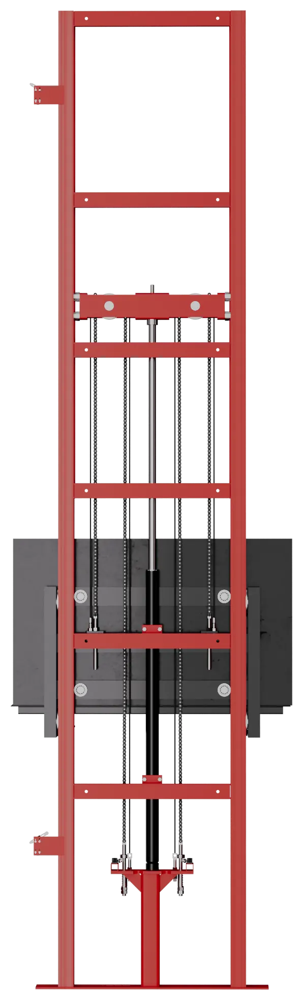

Макеты · октябрь 2026

Новые блоки для сайта
Семь макетов по идеям: цепи на консольном, фото с объектов и гидростанции. Жёлтым отмечено то, что нужно уточнить или прислать. Фото кликабельные, в макетах можно наводить и нажимать.
Двухрядные цепи
Анимации для блока цепей
Живые прототипы: открывайте и прокручивайте. Это проверка идей, финальный вид соберём в коде сайта.
ПРОТОТИП AБлок цепей в стиле сайтаФото цепей на всю ширину первым, плавное появление, зачёркивание «как у всех», цепь на листе чертежа, которая потом крутится.

ПРОТОТИП BКак работает консольныйСхема движется при прокрутке: шток проходит метр, платформа два.
ПРОТОТИП C10 000 подъёмовЗвёздочка против блока: блок истирается, цепь садится и вытягивается.
Фото на объектах · мозаика уже на сайте
Три варианта. Можно взять один или сочетать: мозаика на моделях и общая страница.


Гидростанции
Вместо «на объекте»: показываем устройство, цвета и размерный ряд.


Монтаж на главной
Несколько фото монтажа в последнем шаге ленты «От заявки до монтажа».